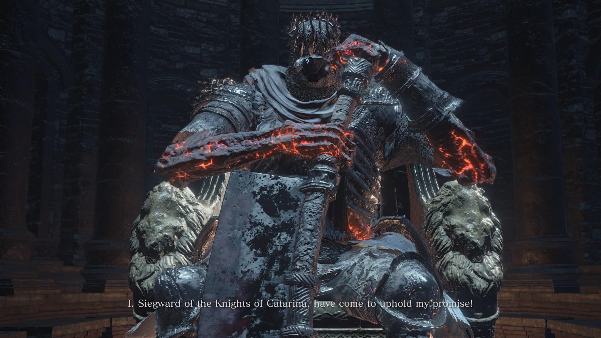

Meet the bosses
that will let you suffer troughout the journey
You know, without any Knowledge you won´t be able to defeat all the bosses that are inculded in the game.
That´s why I am going to give you some tips and basic information about all necessary bosses that I collected troughout my playtrough.
Im going to give the bosses difficulties based on their moveset and my own impressions.
I won´t be showcasing the DLC bosses or bosses that aren´t necessary to beat the game.
Just to let you know HP is healthpoints in short and DS3 Dark Souls 3 in short.
Some shortcuts to help you out:
Vordt of the Boreal Valley
Crystal Sage
The Abyss Watchers
Deacons of the Deep/Wolnir
Pontiff Sulyvahn(important tips in here)
Yhorm the Giant
The Devourer of Gods ,Aldrich
The Dancer of the Boreal Valley
Lorian, Elder Prince
Soul of Cinder
Iudex Gundyr
Difficulty:
We need to look from two perspectives now.
The boss itself isn´t hard if you played the game in advance.
But most people actually started with DS3.
This fact makes the boss actually really hard, which also lead me to tilt a few times.
Information about the fight:
This boss must be beaten in two different phases. After taking half of his HP
Gundyr will halfly transform into a black monstrosity that will probably leave you speechless. This changes his attacks and makes him way more deadly than before.
Gundyr has a small moveset which will be in your favour. Learning his attacks won´t take that long.
Vordt of the Boreal Valley
Difficulty:
Vordt is one of the easiest bosses in DS3.
To my mind Vordt even feels easier than Gundyr.
Information about the fight:
If you follow one single tip Vordt will be easily defeated.
Try to stick on his back. If you follow this simple trick Vordt wont be able to hit you with his abilities.
During the fight when Vordt peakes low HP he screams insanely loud and gets surrounded by an icy aura.
He then starts to run around the room targeting you.
Your only chance to attack is, when he starts channeling his ice breath.You should be able to finish him after two ice breaths.
Crystal Sage
Difficulty:
The boss itself isn´t very challenging due to his low HP. Tho the burst damage of the boss is really impressive.
If you manage to play careful the boss will be done after a few trys.
Information about the fight:
Crystal Sage, as the name already tells, is a magician. As you strike into battle the Zorro-looking mage will cast
homing ice missiles that follow you wherever you go but if you stay behind a wall the missile will pop and wont longer bober you.
In the second phase he creates white-eyed duplicates.
If you manage to find the real one with the purple glowing ones and nuke him down fastly you´re good.
The Abyss Watchers
Difficulty:
So, now we talk about the most stylish and impressing boss featured in this game. That´s why im going more into detail now.
The boss is probably the first challenge to new Dark Souls players because mastering this boy wont be that easy.
He has a varied moveset which can/will kill you if you don´t exactly know what his next move is.
The key to mastering this boss is definitly taking time in learning his moveset.
But even then the boss can one-shot-kill you if you manage to miss dotching one of his attacks. Can be tilting. Really tilting.
Information about the fight:
The fight is a little different than others. After fighting a few seconds a second Abyss Watcher will join the fight and attack you.
A few seconds after the first one jumped in a third one comes into play.
The third one is marked with red shining eyes and will be your best friend (if you dont attack him). He targets the main boss and his friend along you.
After getting the HP down to 0 at first the boss will respawn and completly change his moveset.
Impressivly he respawns with an aura of fire surrounding his sword and a slight touch of ember on his clothes
which creates an insane atmosphere during the boss fight. The music that is played also is just awesome.
Deacons of the Deep and Wolnir
Meet the Deacons of the Deep

Lord Wolnir of Carthus
Difficulty:
Don´t worry, you won´t have a hard time on these two, they´re pretty weak.
Even without knowing what the boss does you can probably defeat him in two or three attempts.
Information about the fights:
After beating Crystal Sage and The Abyss Watchers you can now choose how you proceed.
The best way would be to take down the Deacons first because they drop you an item that is needed to continue after defeating Wolnir.
Deacons:
The Deacons are just a lot of undead priests that want to take your soul. Sounds scary but dont worry if you´re not unlucky the boss won´t be a problem to you.
You can get trapped inside a huge mass of those Undeads but even then you can roll your way out.
The fight also contains two phases.(as actually many bosses do) In phase one a flame will drop onto one of many priests that will then be marked with an aura of fire.
The HP of the boss will only drop if you hunt the priest marked with the flame. And yea it´s as easy as it sounds.
On phase two a high-priest joins the battle. Dont worry he isn´t really able to fight back harder than the other priests. Just hunt him next an the item of your behave is yours.
Wolnir:
This spooky scary skeleton is also no challenge. Hit his huge yellow sparkling braceletts and the victory will be yours.
If you get unlucky the boss will glitch you into darkness while hitting his left bracelett. But dont get tilted just try again.
Pontiff Sulyvahn
Difficulty and Information:
After reading the introduction of my site you may think "why is the game so hard when the first bosses are defeated so easily"? Well here comes the answer.
Pontiff will be your first challenge in DS3. To my mind Pontiff is the hardest boss in DS3. I personally stopped playing for several months because
I couldn´t proceed from this point on. That´s why im going to tell you now how I took him down my first time.
He mainly deals fire and magic damage. You should equip a light armor that lets you move fast and has a high resistance against fire and magic.(obviously)
Tactic:
I personally played the fight with a shield tactic. Professional players would use a technique that is called parrying where you counter his attacks but this takes
a damn lot of practice because the timing is really hard. My tactic is for beginners.
Equip the best shield you have at this point of the game and a fast one-handed weapon. Use your shield to block and walk around the boss while blocking.
Time after time Sulyvahn will do a charge-attack that won´t hit you if you keep walking around him.
After his attack there is a small period of time where you can drop your defensive position and attack him 2 times.
Do this until he joins phase 2. This is where the real pain begins.
During second phase his attack do more damage are performed faster and time after time he spawns a clone of himself that mirrors his attacks with low HP but the same power as Pontiff himself.
While he spawns his clone he´s vulnerable so be sure to drop a lot of damage on him AND also his clone.
After that, tryhard as hard as you can and take down the clone because you won´t be able to take down the boss if you get hunted by duplicated attacks.
Then pray and use your shield but be aware of the attacks that can´t be blocked.(all magic attacks, you will notice them)
Best regards
I wish you all the luck that I can give you. Take your time! Some feel good after they defeat the boss.
Some scream really loudly filled with anger on the game.(definitly not me)
Hate-love relationship. As I said. After feeling this you´ll instantly fall in love with the game.
Yhorm the Giant

Difficulty:
No problem, trust me.
Information about the fight:
As you walk into a huge room you´ll see Yhorm walking to you fastly.
I had no idea how to get this boss done and just tried the rutine. Damaging him.
It did no damage at all and of course you´re not supposed to kill Yhorm with a normal sword.
If you run to his huge throne you will find "The Storm Ruler" which is a double-handed sword.
If you charge the sword long enough you can channel a huge air slash which deals a dramandous amount
of damage.
The Devourer of Gods, Aldrich
Difficulty:
Aldrich is a boss that is as tilting as Sulyvahn. Simply because he can oneshot you with one of his attacks.
This well known attack where he shoots arrows at you can only be dotched by praying or hiding behind a pillar.
The sad thing is that Aldrich destroys those pillars time after time.
So you got a limited time to take him to his second phase where you can finally run away from his arrow-attack.
Quick reminder : His tail takes more damage than his body so makes sure to hit his tail.
Information about the fight:
This weird looking snake-/human-thingy will be met just a few minutes ahead from Sulyvahn.
Yea, two insane bosses in a row. Thats DS3.
Dancer of the Boreal Valley

Difficulty:
Many say "The Dancer is cancer" and actually thats kinda true. His attacks are fast and hit like a truck.
On his second phase he pulls a sword out of the ground and is then able to perfom an attack that lets him spin
like a fidget spinner. Be sure to stay away because this attack will probably one-shot you.
He also deals magic and fire damage just as Pontiff does so be sure to equip
light armor with high magic and fire resistance.
Information about the fight:
He starts with one sword but will continue with two after loosing half of his HP. You need to make sure to
dotch his grap-attack which will be noticeable. It doesnt seem very devastating because of the slow animation
but it will get you dont to 1/4 of your HP so be careful.
Sadly I can´t give many tips for this fight because it is based on learning his moveset.
Dont give up too early you´ll get it done.
Lorian, Elder Prince
Difficulty:
Lorian can be hit-traded very well because you´ll have enough heal power at this stage of the game.
This makes his first phase pretty easy if you manage to dotch his knock-up.
In phase 2 you need to fight two enemies. Him and his brother. It is important to know that the fight will
end only if you manage to take down the brother that lays upon the princes shoulder. If you do it the other way around
he will be revived.
Information about the fight:
Lorian always fascinated me because of the unique fighting style and his design ingeneral. It seems like his Lorian, the Elder Prince
is controlled by his younger brother. Ingeneral the boss seems well designed all-around.
That doesn´t make the fight easier tho. The attack of this boss deal a lot of damage and he teleports behind you a lot.
Phase 1 still isn´t compareable to phase 2 where you face Lorian and his brother together. They both have seperate HP.
His sword will also have a little upgrade. He deals way more damage and the magic attacks of his brother are deadly aswell.
Always be aware of the situation you´re in and dotch his strong teleport attacks.
After beating this boss the game still isn´t over. You killed all necessary bosses but there´s still one left.
Soul of Cinder, your final challenge
Difficulty:
This boss is worthy of beeing the end-boss of this game series.
He features one of the hardest and longest fights in the game and features the power of all bosses you defeated during your journey.
This boss can bring you to frustration more than one time but it will be worth beating him, trust me.
Keeping distance and waiting for his leeping attack is a good way of avoiding damage in the first phase.
Because he can switch between 4 forms (sorcery,miracle,pyromancy and melee) his moveset is imense but still needed to learn.
The bad thing is that not every form provides a good and easily counterable attack.
His sorcery form is the worst in my opinion because he deals an insane amount of damage if you dont manage to dotch the spells he casts.
As much as I wanted to help you trough this fight I wont help you on this one. You´re on your own. Good luck!
Information about the fight:
The music and the enviroment share the fact that you´re facing the end-boss of a game that led me and probably others trough a lot of hate but also love on the game.
From leeping-attacks to huge fire explosions and lightning bolts everything is thrown at you this fight. But there are no clones, atleast something.
As said before the boss features 4 different forms.
Pyromancy form
he holds a curved sword and will be faster than in any other form
Sorcery form
he is holding a staff and his attacks will deal a massive amount of damage to you
Miracle form
gives him a pike which grants him a huge range
Melee form
noticeable by his longsword that lets him perfom a devastating combo-attack.
You dont wanna get hit by that or you´re in trouble.